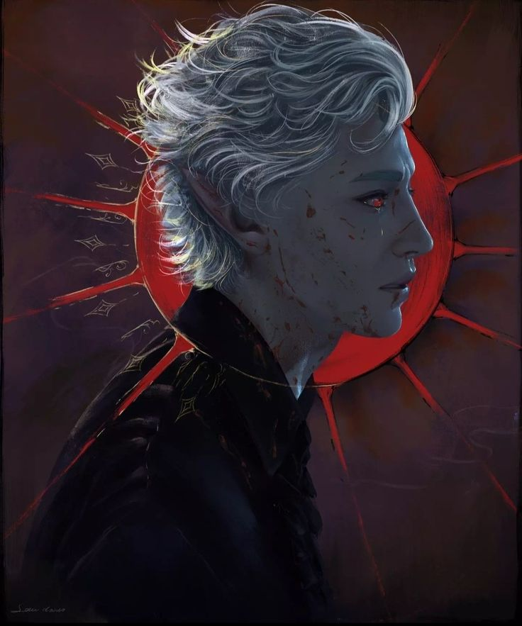
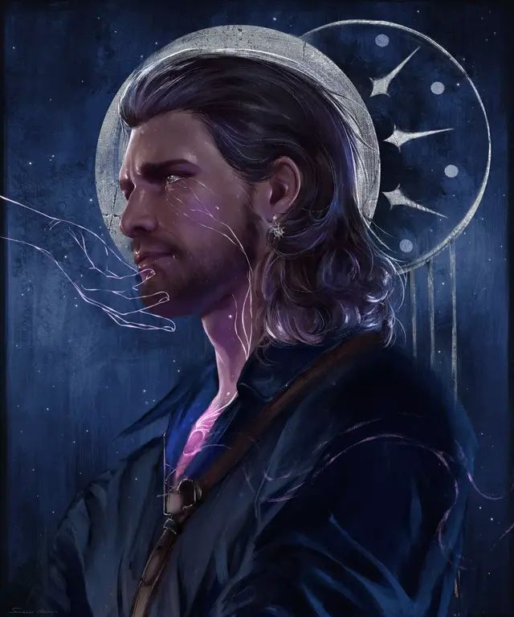
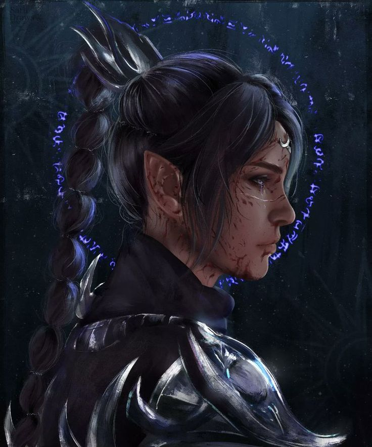
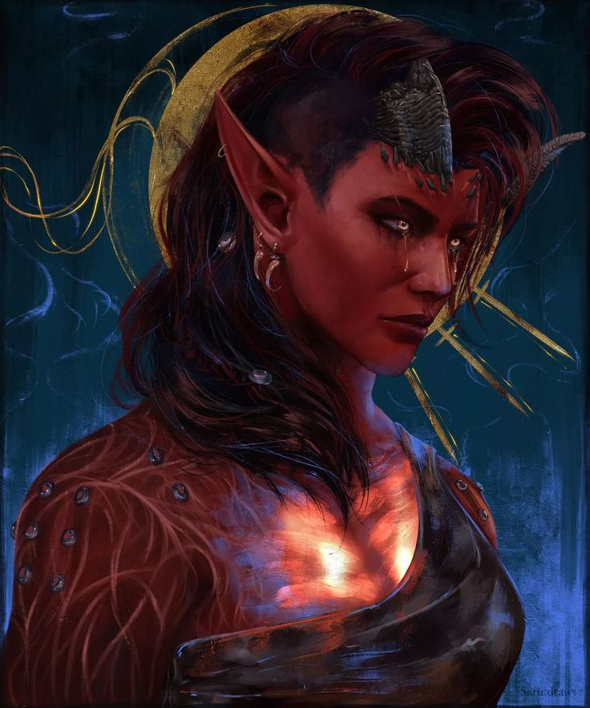
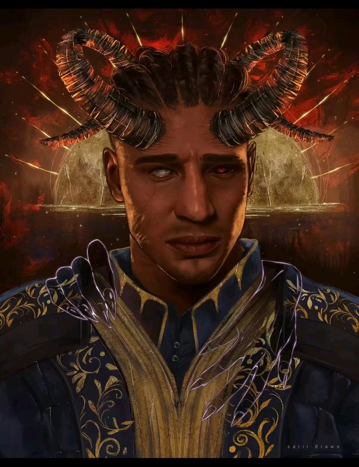

-
Astarion
Descrição
Astarion rondou a noite como uma cria de vampiro durante séculos, servindo a um mestre sádico até ser arrebatado. Agora ele pode caminhar na luz e ter a chance de uma nova vida, mas por quanto tempo ele conseguirá manter seu passado enterrado?
-
Gale
Descrição
Um prodígio em magia, Gale é um bruxo de grande talento e grande ambição. Outrora um Escolhido de Mystra, sua busca para provar seu valor à deusa da magia resultou em ele ser amaldiçoado com uma forma de magia há muito esquecida, uma bomba-relógio com uma fome que o consome. Agora, perdido nas graças de Mystra e com um girino no cérebro, Gale deve encontrar uma maneira de se livrar da maldição e do convidado indesejado.
-
Shadowheart
Descrição
Uma devota seguidora de Shar, Shadowheart é a única sobrevivente de uma missão sagrada realizada a mando da Senhora da Noite. Ela sozinha deve entregar uma relíquia de imenso poder ao seu clã em Baldur's Gate, enquanto é ameaçada por uma nova e estranha magia que está brotando de dentro dela. Sua fé desempenha um papel importante em sua história ao longo do jogo.
-
Lae'zel

Descrição
Uma guerreira feroz da creche K'liir, Lae'zel é um seguidora de Vlaakith, a Rainha Lich dos githyanki. Jurada obedecer a sua rainha e servir como uma lâmina contra os Illithid, ela foi capturada em sua missão para apresentar uma cabeça de Devorador de Mentes para sua rainha. Agora, com um girino e com poucas opções em mãos, ela deve encontrar uma maneira de se livrar do parasita e finalmente provar que é uma guerreira digna da Rainha Imortal. Como ela fará isso e se permanecerá leal a Vlaakith é algo que ela pode decidir ao longo do jogo.
-
Karlach
Descrição
Presa em Avernus sob a bandeira de Zariel devido às maquinações daqueles em quem ela mais confiava, Karlach luta na Guerra de Sangue há uma década, longe de tudo o que amava. Com a incursão do nautilóide aos Nove Infernos, o destino sorriria para ela e lhe daria uma saída, apenas para se voltar contra ela com a mesma rapidez. Agora, finalmente livre, embora com um convidado indesejável na cabeça, ela deve proteger com a vida a sua liberdade arduamente conquistada enquanto procura vingança contra aqueles que a traíram há muitos anos. Com um motor com defeito no coração e um desejo ardente de viver, ela será capaz de se salvar ou os Infernos a alcançarão mais cedo ou mais tarde?
-
Wyll
Descrição
Sendo a lendária “Lâmina das Fronteiras” e filho do Grão-Duque Ulder Ravengard, Wyll está obrigado por um pacto a servir a demônio Mizora, um cambionte a serviço do Arquidiabo Zariel. Recebendo poderes diabólicos de sua amante do pacto, Wyll deve caçar todos os tipos de demônios sob o comando de sua patronesse. Preparado para sacrificar qualquer coisa para proteger Baldurs Gate, Wyll deve lutar para manter seu desejo de fazer o bem contra as maquinações de Mizora.